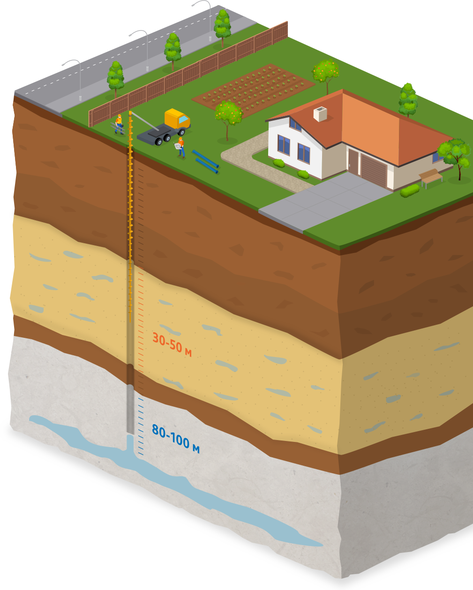

Бурим скважины на воду
в Москве и Московской области
Гарантия на работу — 7 лет
Мы подведём к дому чистую воду и оборудуем скважину без вреда для вашего участка. Чтобы оценить стоимость, нам нужно осмотреть местность и узнать, на какой глубине находится вода.
Песчаная скважина
Бурение обходится недорого, однако вода в песчаных слоях может содержать токсины. Перед употреблением ее обязательно нужно обработать. Производительность источника небольшая – около одного кубометра в час. Если скважину использовать нерегулярно, она может забиться.
Артезианская скважина
Кристально чистая вода из глубокой подземной породы. Скважина не забьется, даже если использовать ее очень редко. В составе воды много железа и солей, но этот недостаток устраняет фильтр. Высокая производительность скважины позволяет организовать в доме несколько источников.
